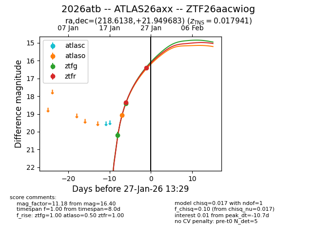
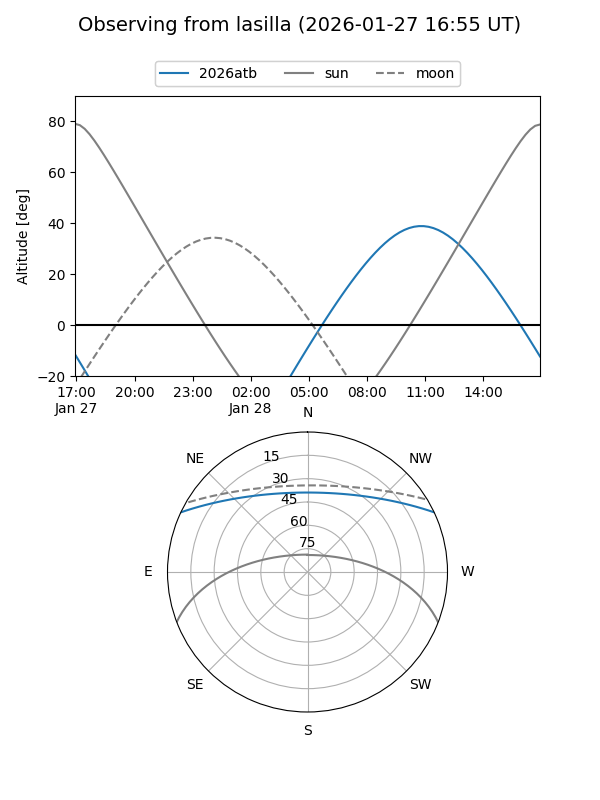
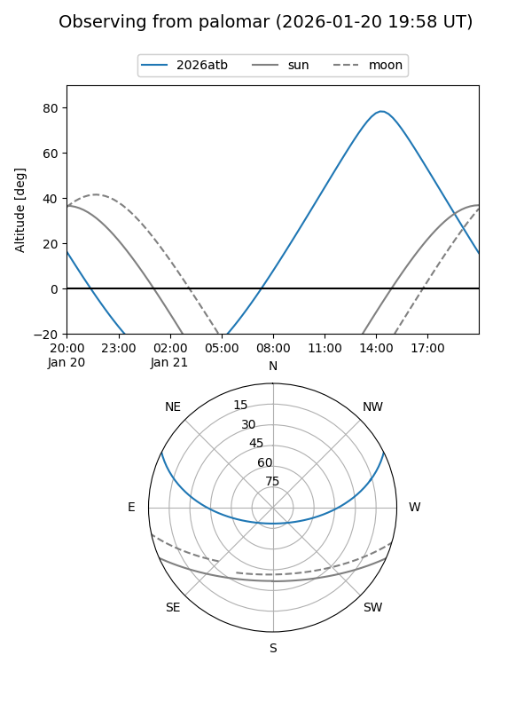
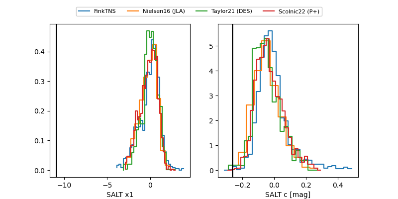

2026atb
Target 2026atb at 2026-01-28 11:01
Aliases and brokers:
FINK: link
Lasair: link
ALeRCE: link
TNS: link
YSE: link
alt names
ZTF26aacwiog (ztf,fink_ztf)
2026atb (tns,yse)
ATLAS26axx (atlas)
Coordinates:
equatorial (ra, dec) = 218.6138,+21.94968
equatorial (HMS+DMS) = 14:34:27.30,+21:56:58.86
galactic (l, b) = (26.1050,+66.05286)
Flags:
confirmed ia
Photometry:
last atlaso=19.05, ztfg=18.40, ztfr=16.40
1 atlaso, 2 ztfg, 2 ztfr detections
Lightcurve

Visibility


Additional plots
